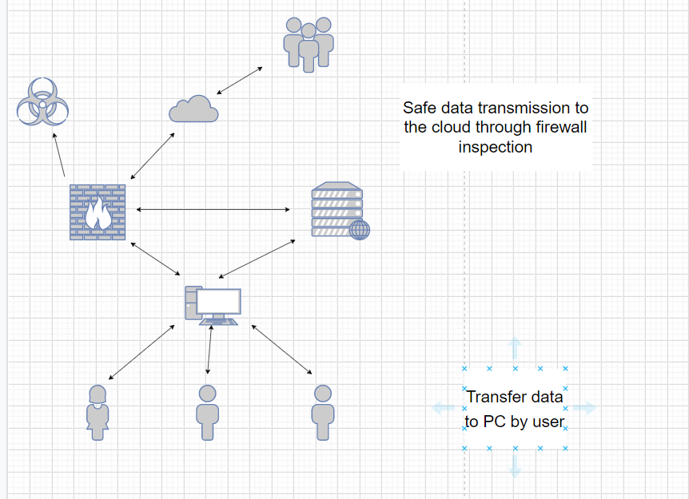

The system transmits the data transmitted by the user to the PC to the network server, detects and distinguishes safe and dangerous data through the firewall, then excludes the dangerous data and transmits the safe data to the cloud.
With the accelerated development of social digitization and intelligence, the wide application of new technologies such as AI, 5G, and IoT, as well as a large number of new hardware and applications have brought about rapid growth in data volume, and at the same time, data types have become more and more diverse. Produce, capture and store as much data as possible for full analysis to gain insights. Therefore, the storage and classification of data is very important. The IT project I study is about database storage and data classification, storing safe data and excluding dangerous information.
| Name | Details |
|---|---|
| Microsoft SQL server | MySQL is one of the most popular relational database management systems. In terms of WEB applications, MySQL is one of the best RDBMS (Relational Database Management System) application software. |
| HPE ProLiant DL360 Gen10 Plus server | HPE ProLiant DL360 Gen10 Plus Server with one Intel® Xeon® Scalable 4309Y processor, one 32 GB dual-rank memory, Broadcom MegaRAID MR416i-a x16-lane 4 GB cache NVMe/SAS 12G controller for HPE Gen10 Plus and HPE 96W Smart Storage Li-Ion Battery with 145mm cable, eight mini SAS/SATA/NVMe drive bays, five high performance fans, one HPE 800W Flex Slot Platinum Hot Swap Low Halogen Power Supply and 3/3/3 Warranty |
| Tom(Jiang Yuyi) | Knight(Chen Jiahao) | |
|---|---|---|
| Name this system? | database management system | database management system |
| What are the system objectives? | Build a database management system to identify the security of information and store secure data | Build a database management system to screen and store secure data |
| List 3 essential system features and components? | Data classification, data storage, filtering data | Data classification, data storage, filtering data |
| List 3 essential hardware from this system. | CPU, Hard Disk, Network Card | CPU, Hard Disk, Network Card |
| List 3 essential software from this system. | Microsoft SQL server，HPE ProLiant DL360 Gen10 Plus server，IIS server | Microsoft SQL server，HPE ProLiant DL360 Gen10 Plus server，Apache server |
| List 2 external system components. | smartphone, computer | pad，laptop |
| List 2 system benefits | Ability to automatically filter secure information | Has a large amount of storage |
| List 2 project difficulties: | Need to build a large database | Not possessing a higher technical level |